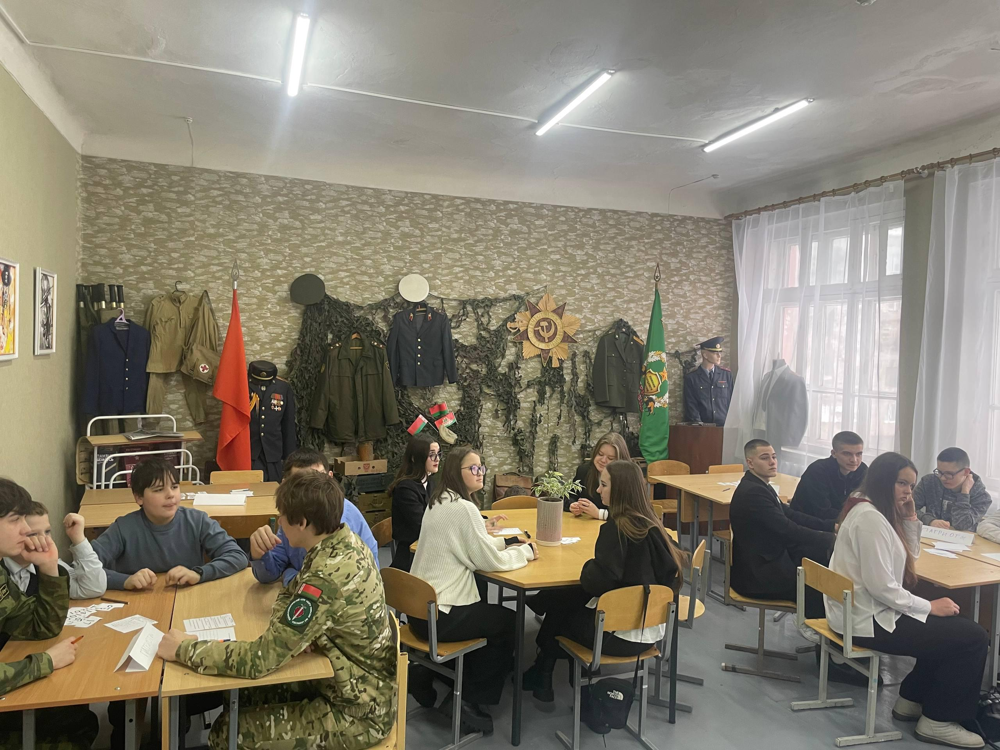
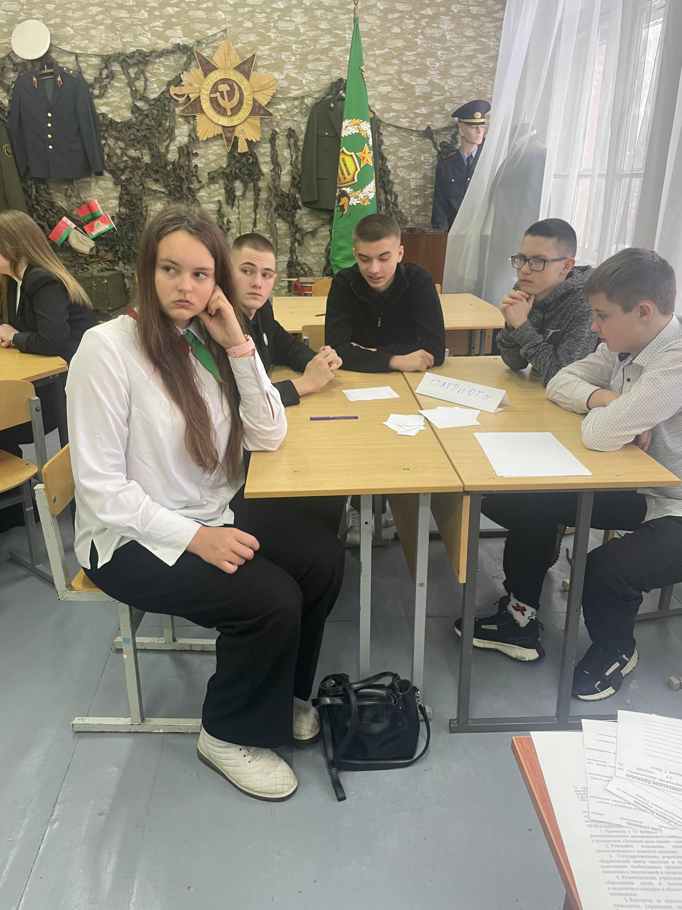

Я ПАТРИОТ СВОЕЙ СТРАНЫ!
Именно под таким девизом в Борисовском центре экологии и туризма 13 февраля прошла встреча командиров военно-патриотических клубов учреждений общего среднего образования Борисовского района.
Военно-патриотический клуб Государственного учреждения образования «Гимназия №1 г. Борисова» представил Степан Линник.

В рамках мероприятия ребята обсуждали фундаментальные основы и ценности, формирующие истинный патриотизм, какими чертами должен обладать патриот, как любовь к Родине должна проявляться в повседневной жизни, и почему важно ценить и беречь свою страну.
В заключение встречи лидеры военно-патриотических клубов приняли участие в интеллектуальном баттле «Родной свой край люби и знай». В формате увлекательной игры они отвечали на вопросы, касающиеся ключевых исторических событий, богатых традиций и достопримечательностей Беларуси.
